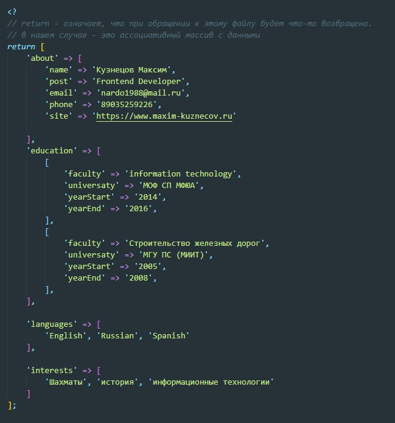
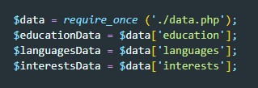
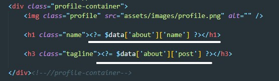
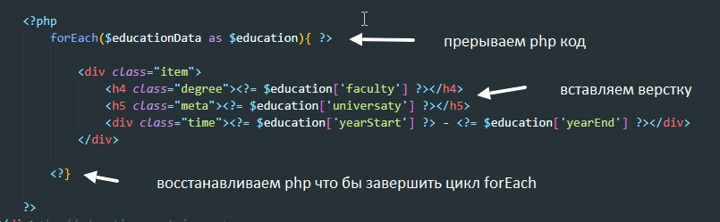

Динамическое наполнение страницы данными из php
Подготовка данных

Импорт данных на главную страницу

- require - в качестве аргумента получает путь до файла от которого получает и возвращает данные. Если файл не доступен то вернет варнинг и фатальную ошибку (скрипт не отработает)
- require_once - в отличии от предыдущего метода, при этом методе файл с данными можно использовать только один раз в проекте.
- include - в отличии от require возвращает только варнинг есть файл не доступен (скрипт отработает)
- include_once - тоже самое что и require_once, с той разницей что в случает если файл не доступен, то вернет только варнинг
Вывод простых данных

т.е. мы просто обращаемся к ассоциативному массиву
Вывод данных с помощью forEach
